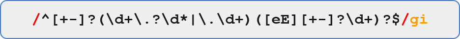

정규표현식(Regular Expression) 이란 컴퓨터 프로그래밍 언어의 일종으로 특정 형태(pattern; 패턴)의 데이터를 일괄적으로 찾거나 변경, 치환하기 위해 사용하는 형식언어이다.
개별 데이터를 사람이 찾거나 변경하는 것은 상당한 시간을 소모하지만, 컴퓨터에 특정 규칙을 지정하여 일괄적으로 찾거나 변경하는 것은 상대적으로 적은 시간을 소모한다.
일반적으로는 텍스트 문자열(문자와 숫자)을 다루는데 특화되어 있으나, 바이너리 데이터를 변경하는 데에도 많이 사용한다. 정규표현식의 구성요소는 일반 문자열과 형태를 지정하는 특수문자, 그리고 이를 구조화하는 대괄호, 중괄호, 소괄호로 이루어져 있다.
정규표현식에서는 특수문자, 대괄호, 중괄호, 소괄호 등을 제외한 나머지를 문자열로 인식한다.
즉 특수문자를 제외한 영어와 한글, 한자 등의 모든 문자와 숫자이다. 단, 영어 등 서구권 언어의 경우에는 대문자와 소문자를 구별한다.
원래 정규표현식은 한글, 한자 등의 인코딩이 없던 1970년대에 만들어졌기 때문에 특정 프로그래밍 언어나 문서 편집기에서는 인식이 안되거나, 입력한 글자와 실제 문서의 인코딩이 달라 정규표현식이 오작동하는 경우가 있었다.
특히 EUC-KR 인코딩과 유니코드간의 호환이 안되면 정규표현식이 작동하지 않았다. 한자의 경우에는 이 문제 외에도 유니코드에서의 한중일 통합한자 문제가 있다.
간편하면서도 강력하다는 점이 바로 이 정규식을 활용한 검증의 장점이다.
좀 더 세분화 해 보면, 정규식을 활용하여 다음과 같은 문자열 연산을 할 수 있습니다.
● 패턴 검사: 패턴과 부합하는지 여부 검증
● 패턴 추출: 패턴과 부합하는 문자열 토큰 추출
● 패턴 치환: 패턴과 부합하는 문자열 토큰 치환
정규식의 패턴은 두 개의 슬래시(/) 사이에 입력하고, 뒤에는 수식자(Modifier)를 기술합니다. 경우에 따라서 수식자를 생략할 수도 있습니다.

위 예시에서 두 개의 빨간색 슬래시 사이에 있는 외계어가 정규식 패턴이고, 뒤따라 나오는 gi는 수식자입니다.
수식자는 패턴 검색 과정에서 전체적으로 적용할 규칙을 기술합니다.
기본적으로 다음과 같이 세 개의 수식자를 지원하며, 사용하는 정규식 엔진에 따라서 추가적인 옵션을 제공할 수도 있습니다.
● i : 대소문자 무시 (Ignore case)
● g : 모든 패턴 검색 (Global match)
● m : 여러 줄에 걸친 패턴 허용 (Multiline match)
'모든 패턴 검색' 옵션은 패턴 연산에서 일치하는 첫 번째 패턴을 찾았을 경우 검색을 중단할 지 여부를 지정합니다.
이 옵션을 지정하지 않으면 치환 연산에서 처음 발견한 패턴만 치환하고 연산을 종료합니다.
정규식은 특정 문자열이 아닌, 패턴(Pattern)을 다루는 연산식이기 때문에 이들 패턴을 나타내는 다양한 한정자들을 지원합니다.
한정자들을 조합해서 원하는 패턴을 나타내는 정규식을 작성할 수 있습니다.
.
하나의 문자.
단, 수식자 m이 지정되지 않은 경우 New line 문자(\n)는 무시됩니다.
[]
문자 클래스.
여러 개의 문자를 묶어서 '이들 중 하나', 혹은 '이들 제외'를 의미합니다.
()
문자 그룹.
기본적으로 패턴 추출 연산에서 추출할 패턴을 지정할 때 사용하며, 연산의 우선순위를 지정할 때도 사용할 수 있습니다.
\
Escape.
\t(Tab 문자), \s(White space), \d(숫자)와 같은 특수문자를 나타내거나, \.(Period '.'), \^(^)와 같이 한정자를 일반 문자로 인식시켜야 하는 경우 사용합니다.
|
OR.
예) (http|ftp) : 'http' 또는 'ftp'
^
NOT. / 줄의 시작.
문자 클래스의 전단에 지정해서 '나열된 문자를 제외한 임의의 문자'를 의미합니다.
정규식의 Leading Slash 직후에 사용된 경우, 줄의 시작을 의미합니다.
예) [^!&*;:'"\\/] : !, &, *, ;, :, ', ", \, /를 제외한 임의의 문자
$
줄의 끝.
정규식의 Trailing Slash 직전에 사용되어 줄의 끝을 의미합니다.
예) /^.*$/ : 빈 줄을 포함한 한 줄
*
0회 이상 반복.
직전에 나타낸 문자/문자 클래스/문자 그룹이 0회 이상 반복됨을 의미합니다.
e.g.) .* : 빈 문자열("")을 포함한 아무 문자열
+
1회 이상 반복.
직전에 나타난 문자/문자 클래스/문자 그룹이 1회 이상 반복됨을 의미합니다.
예) .+ : 빈 문자열("")을 제외한 아무 문자열
?
0회 또는 1회.
직전에 나타난 문자/문자 클래스/문자 그룹이 1회 나타나거나 아예 나타나지 않음을 의미합니다.
예) https? : 'http' 또는 'htttps'
{m}
m회 반복.
직전에 나타난 문자/문자 클래스/문자 그룹이 m회 반복됨을 의미합니다.
예) [\d]{3} : '123', '032', '564', ...
{m,}
m회 이상 반복.
직전에 나타난 문자/문자 클래스/문자 그룹이 m회 이상 반복됨을 의미합니다.
예) a{2,}b : 'aab', 'aaab', 'aaaab', ...
{,n}
n회 이하 반복.
직전에 나타난 문자/문자 클래스/문자 그룹이 n회 이하 반복됨을 의미합니다.
예) a{,2}b : 'b', 'ab' 또는 'aab'
{m,n}
m~n회반복.
직전에 나타난 문자/문자 클래스/문자 그룹이 m~n회 반복됨을 의미합니다.
예) a{2,3}b : 'aab' 또는 'aaab'
주로 활용하는 서비스는 Regexr, Regexper 이다.
잘 되어있는 라이브러리 https://validatejs.org/ 를 가져다 쓰는것도 나쁘지 않다.
아래는 자주 사용하는 정규표현식이다. 참고하자!
^(http|https|ftp):\/\/(([A-Z0-9][A-Z0-9_-]*)(\.[A-Z0-9][A-Z0-9_-]*)+)(:(\d+))?\/?
URL 표현식
예: https://regexr.com, http://www.naver.com:80
\w{1,}[@][\w\-]{1,}([.]([\w\-]{1,})){1,3}$
EMAIL ADDRESS 표현식
예: a_b@naver.com, regex@daum.net
^(\d{2})[0|1](\d)[0|1|2|3](\d)[\-||\s]?([1|2|3|4]\d{6})$
주민등록번호 표현식
예: 920106-1234567
^(\d+)[/|\-|\s]+[0|1](\d)[/|\-|\s]+([0|1|2|3]\d)$
날짜 표현식
예: 2019-01-01, 2018-12-31
/^([1-9]|[01][0-9]|2[0-3]):([0-5][0-9])$/
시간 표현식
예: 50:24, 12:02
^\d{3}\-\d{4}\-\d{4}$
휴대폰번호 표현식
예: 012-3456-7890, 123-4567-8901
^\d{2}\-\d{3,4}\-\d{4}$
집 전화번호 표현식
예: 02-1234-5678
^\d{1,3}\.\d{1,3}\.\d{1,3}\.\d{1,3}$
IP 주소 표현식
예: 0.0.0.0 ~ 999.999.999.999
^([0-9a-fA-F]{2}:){5}[0-9a-fA-F]{2}$
맥 주소 표현식
[\x4E00-\x9FA5]|[\xF900-\xFA2D]
[\x{4E00}-\x{9FA5}]|[\x{F900}-\x{FA2D}]
한자 표현식
^[0-9]*$
숫자 표현식
^[a-zA-Z]*$
영문자 표현식
^[가-힣]*$
한글 표현식
^[a-zA-Z0-9]*$
영어, 숫자 표현식
/^#[A-Fa-f0-9]{3,6}$/
HEX 색상 코드
/^.+\.(jpg|png|gif|bmp)$/
그림 파일명